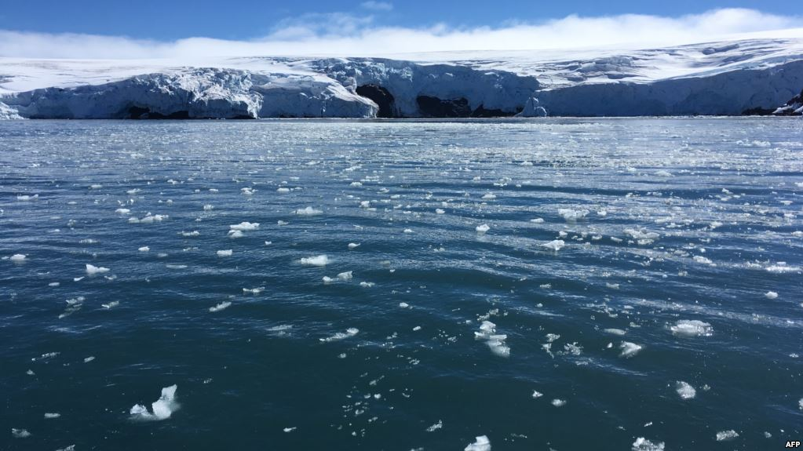

intro
Ekosistem jarang dipengaruhi oleh satu perubahan. Kombinasi antara faktor alam dan antropogenik dapat menyebabkan degradasi ekosistem, perbaikan ekosistem atau suksesi.

Ekosistem jarang dipengaruhi oleh satu perubahan. Kombinasi antara faktor alam dan antropogenik dapat menyebabkan degradasi ekosistem, perbaikan ekosistem atau suksesi.
---------

Hasil kajian banyak peneliti menunjukan bahwa tanpa perbaikan kebijakan dan praktik pembangunan di wilayah pesisir, laju kehilangan hutan mangrove di Asia Tenggara dalam beberapa dekade terjadi akibat konversi menjadi lahan pertanian dan perkebunan kelapa sawit. Padahal dalam banyak kasus, hutan bakau melindungi kawasan pesisir dari terjangan badai, angin topan atau tsunami sekalipun.Karena ekosistem ini mampu menyesap air dalam jumlah besar dan dengan begitu mencegah banjir. "Akar dan dahan bakau menahan gelombang air," kata Femke Tonneijck dari organisasi lingkungan Wetlands International.
Penangkapan berlebih (over-exploitation), didefinisikan sebagai pengambilan sumber daya hayati laut (ikan) pada laju yang melebihi kemampuan sumber daya untuk melakukan pemulihan secara alami. Indikasi awal penangkapan berlebih ialah berkurangnya stok populasi, dan akhirnya, hasil tangkapan nelayan. Indikasi lainnya ialah pada semakin kecilnya ukuran ikan yang tertangkap oleh nelayan. Penangkapan berlebih, jelas akan merugikan nelayan dan masyarakat karena potensi sumber daya yang bisa dimanfaatkan akan semakin menurun. Hal ini akan berdampak pada kerugian ekonomi masyarakat lokal, bahkan bisa terjadi dalam bentuk hilangnya salah satu sumber penghidupan masyarakat pesisir dari penangkapan ikan. Ketika sumber daya mulai berkurang, kita bisa melihat frekuensi konflik diantara nelayan pengguna sumber daya yang semakin intens. Konflik nelayan di Selat Madura (Jawa Timur) atau di Selat Malaka (Sumatera) ialah dua contoh yang masih kita bisa lihat sampai saat ini. Sumber daya hayati laut tinggal pada habitat atau ekosistem dan membentuk simbion, satu sama lain saling terkait, membentuk kesimbangan ekosistem.44 Ancaman pada sumber daya hayati laut Penangkapan berlebih bisa terjadi dalam beberapa bentuk – growth over fishing, recruitment over-fishing dan ecological over-fishing. Growth over-fishing terlihat dari gejala ukuran ikan hasil tangkap yang semakin kecil. Ecological over-fishing menyebabkan perubahan susunan rakitan spesies yang selanjutnya berdampak pada tidak seimbangnya struktur ekosistem. Recruitment overfishing dicirikan dari menghilangnya individu baru secara mendadak sebagai dampak dari pengurasan induk potensial. Ketiga jenis penangkapan berlebih ini tentu saja merupakan ancaman bagi sumber daya dan keragaman hayati laut.
Pantai berbatu (rocky shore) menjadi habitat dari berbagai jenis hewan dan tumbuhan. Selain menjadi rumah bagi banyak hewan, pantai berbatu juga *enyediakan banyak makanan bagi ikan. Ikan yang dapat ditemukan di sekitar pantai berbatu yaitu blackfish, yellowfinbream, kakap, trevally, yellowtail, dan sampson fish. Hamparan alga di habitat ini menjadi sumber makanan bagi hewan langka seperti penyu. Pada saat air laut surut, burung-burung akan mencari kepiting yang ada di antara bebatuan. Tempat ini tepat untuk mengamati berbagai macam tumbuhan dan hewan, namun juga memberi akses manusia untuk mengumpulkan dan menginjak organisme yang hidup di sana.
Hal di atas menunjukan bahwa semua ekosistem laut terpengaruh dengan adanya kombinasi antara faktor alam dan antropogenik. Banyak kelompok warga, organisasi penelitian, dan pemerintah bekerja untuk mengatasi dampak ini dengan mempelajari ekosistem, menetapkan peratuan, mendidik masyarakat, dan membentuk kawasan lindung laut. Beberapa tindakan konservasi bersifat komprehensif dan terjadi dalam skala besar, seperti pembentukan KKL atau jejaring KKL. Tindakan konservasi lainnya terjadi di tingkat akar rumput atau oleh pekerjaan individu. Contohnya termasuk nelayan yang menggunakan alat navigasi dan pelampung tetap untuk menghindari kerusakan jangkar; kelompok aksi warga yang melakukan proyek pemantauan sukarela; kelompok masyarakat yang berpartisipasi dalam pembersihan pantai; dan keluarga yang memilih produk yang dapat diurai secara hayati atau alternatif untuk mengurangi penambahan nutrisi dan bahan kimia berbahaya ke saluran air terdekat mereka. Mintalah siswa untuk membuat daftar cara-cara agar mereka dapat terlibat dan membantu mengatasi dampak ini untuk memulihkan keseimbangan dan meningkatkan kesehatan laut dunia.
Appropriately maintain standards compliant total linkage with cutting-edge action items. Enthusiastically create seamless synergy rather than excellent value. Quickly promote premium strategic theme areas vis-a-vis.
Appropriately maintain standards compliant total linkage with cutting-edge action items. Enthusiastically create seamless synergy rather than excellent value.

Appropriately maintain standards compliant total linkage with cutting-edge action items. Enthusiastically create seamless synergy rather than excellent value. Quickly promote premium strategic theme areas vis-a-vis.
Appropriately maintain standards compliant total linkage with cutting-edge action items. Enthusiastically create seamless synergy rather than excellent value.